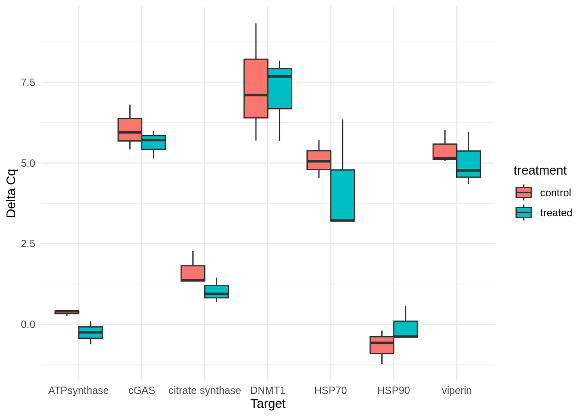
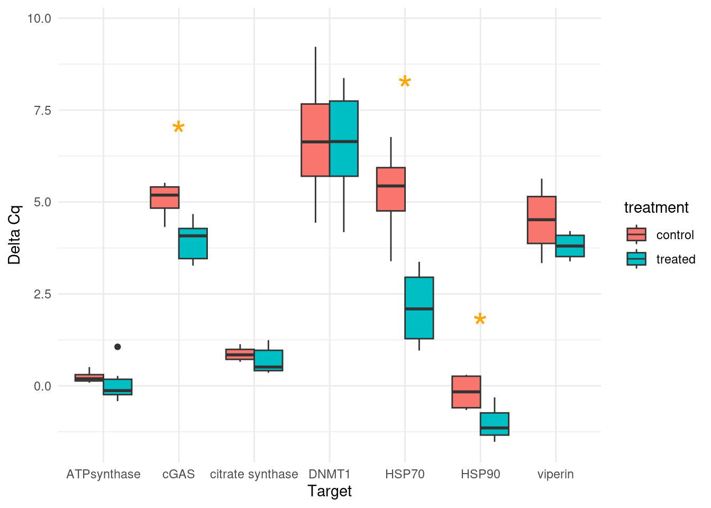

# Set the directory where your CSV files are locatedcqs_directory <-"../2024-03-25-qPCRs---C.gigas-Lifestage-Carryover-cDNA/"# Get a list of all CSV files in the directory with the naming structure "*Cq_Results.csv"cq_file_list <-list() # Initialize listcq_file_list <-list.files(path = cqs_directory, pattern ="Cq_Results\\.csv$", full.names =TRUE)# Initialize an empty list to store the data framesdata_frames <-list()# Loop through each file and read it into a data frame, then add it to the listfor (file in cq_file_list) { data <-read.csv(file, header =TRUE) data_frames[[file]] <- data}# Combine all data frames into a single data framecombined_df <-bind_rows(data_frames, .id ="data_frame_id")# Convert Sample column to character typecombined_df <- combined_df %>%mutate(Sample =as.character(Sample))str(combined_df)
'data.frame': 272 obs. of 17 variables:
$ data_frame_id : chr "../2024-03-25-qPCRs---C.gigas-Lifestage-Carryover-cDNA//sam_2024-03-25_06-10-54_Connect-Quantification-Cq_Results.csv" "../2024-03-25-qPCRs---C.gigas-Lifestage-Carryover-cDNA//sam_2024-03-25_06-10-54_Connect-Quantification-Cq_Results.csv" "../2024-03-25-qPCRs---C.gigas-Lifestage-Carryover-cDNA//sam_2024-03-25_06-10-54_Connect-Quantification-Cq_Results.csv" "../2024-03-25-qPCRs---C.gigas-Lifestage-Carryover-cDNA//sam_2024-03-25_06-10-54_Connect-Quantification-Cq_Results.csv" ...
$ X : logi NA NA NA NA NA NA ...
$ Well : chr "A01" "A02" "A03" "A04" ...
$ Fluor : chr "SYBR" "SYBR" "SYBR" "SYBR" ...
$ Target : chr "ATPsynthase" "ATPsynthase" "ATPsynthase" "ATPsynthase" ...
$ Content : chr "Unkn-01" "Unkn-01" "Unkn-02" "Unkn-02" ...
$ Sample : chr "206" "206" "220" "220" ...
$ Biological.Set.Name : logi NA NA NA NA NA NA ...
$ Cq : num 26.7 26.7 25.8 25.9 25.1 ...
$ Cq.Mean : num 26.7 26.7 25.9 25.9 25.1 ...
$ Cq.Std..Dev : num 0.0455 0.0455 0.0239 0.0239 0.0813 ...
$ Starting.Quantity..SQ.: num NaN NaN NaN NaN NaN NaN NaN NaN NaN NaN ...
$ Log.Starting.Quantity : num NaN NaN NaN NaN NaN NaN NaN NaN NaN NaN ...
$ SQ.Mean : num NaN NaN NaN NaN NaN NaN NaN NaN NaN NaN ...
$ SQ.Std..Dev : num NaN NaN NaN NaN NaN NaN NaN NaN NaN NaN ...
$ Set.Point : int 60 60 60 60 60 60 60 60 60 60 ...
$ Well.Note : logi NA NA NA NA NA NA ...
Unique samples by target
Code
# Group by Sample and Target, then summarize to get unique rows for each sampleaggregated_df <- combined_df %>%group_by(Sample, Target) %>%summarize(Cq.Mean =mean(Cq.Mean, na.rm =TRUE)) %>%ungroup()
`summarise()` has grouped output by 'Sample'. You can override using the
`.groups` argument.
# Calculate delta Cq by subtracting GAPDH Cq.Mean from each corresponding Sample Cq.Meandelta_Cq_df <-calculate_delta_Cq(aggregated_df)str(delta_Cq_df)
# Filter out groups with missing life.stage or Target# Caused by NTCs# Also removes normalizing gene(s)delta_Cq_df_filtered <- delta_Cq_df %>%filter(!is.na(life.stage), !is.na(Target), Target !="GAPDH")# Perform t-test for each Target within life.staget_test_results <- delta_Cq_df_filtered %>%group_by(life.stage, Target) %>%summarise(t_test_result =list(t.test(delta_Cq ~ treatment)) ) %>%ungroup()
`summarise()` has grouped output by 'life.stage'. You can override using the
`.groups` argument.
Code
# Extract t-test statisticst_test_results <- t_test_results %>%mutate(estimate_diff =sapply(t_test_result, function(x) x$estimate[1] - x$estimate[2]),p_value =sapply(t_test_result, function(x) x$p.value) ) %>%select(!t_test_result)# Add asterisk information to data frame# Useful for plottingt_test_results$asterisk <-ifelse(t_test_results$p_value <0.05, "*", "")
Delta Cq Box Plots
Seed
Code
library(ggplot2)# Filter delta_Cq_df_filtered for seed life stageseed_delta_Cq_df <- delta_Cq_df_filtered %>%filter(life.stage =="seed")# Create the box plotboxplot <-ggplot(seed_delta_Cq_df, aes(x = Target, y = delta_Cq, fill = treatment)) +geom_boxplot(position =position_dodge(width =0.75)) +theme_minimal() +theme(legend.position ="right") +labs(x ="Target", y ="Delta Cq")# Add asterisksboxplot +annotate("text", x = t_test_results$Target, y =Inf, label = t_test_results$asterisk,vjust =-0.5, size =4, color ="orange")
Code
# Show box plotprint(boxplot)

Spat
Code
# Filter data for life.stage = "spat"spat_delta_Cq <- delta_Cq_df_filtered %>%filter(life.stage =="spat")# Calculate the maximum delta_Cq for each Targetmax_delta_Cq_by_target <- spat_delta_Cq %>%group_by(Target) %>%summarise(max_delta_Cq =max(delta_Cq, na.rm =TRUE))# Merge t_test_results with max_delta_Cq_by_target to get the maximum delta_Cq for each Targett_test_results_with_max_delta_Cq <-merge(t_test_results, max_delta_Cq_by_target, by ="Target")# Create the box plotboxplot <-ggplot(spat_delta_Cq, aes(x = Target, y = delta_Cq, fill = treatment)) +geom_boxplot(position =position_dodge(width =0.75)) +theme_minimal() +theme(legend.position ="right") +labs(x ="Target", y ="Delta Cq")# Add asterisksboxplot +annotate("text", x = t_test_results_with_max_delta_Cq$Target, y = t_test_results_with_max_delta_Cq$max_delta_Cq +0.5, label = t_test_results_with_max_delta_Cq$asterisk,vjust =-0.5, size =10, color ="orange")

Delta delta Cq
Add treatment and life stage
Code
# Initialize empty vectors to store life.stage and treatmentlife_stage <-character(nrow(combined_df))treatment <-character(nrow(combined_df))# Loop through each row of combined_dffor (i in1:nrow(combined_df)) { sample_id <- combined_df$Sample[i]# Check if the sample_id is present in any of the vectors found <-FALSEfor (vec_name innames(vector_list)) {if (sample_id %in% vector_list[[vec_name]]) {# If present, extract life.stage and treatment from the vector name parts <-strsplit(vec_name, "\\.")[[1]] life_stage[i] <- parts[1] treatment[i] <- parts[2] found <-TRUEbreak# Exit loop once found } }# If sample_id is not found in any vector, assign NA to both life.stage and treatmentif (!found) { life_stage[i] <-NA treatment[i] <-NA }}# Add life.stage and treatment columns to combined_dfcombined_df <- combined_df %>%mutate(life.stage = life_stage,treatment = treatment)# Filter out rows where life.stage is NAcombined_df_filtered <- combined_df %>%filter(!is.na(life.stage))str(combined_df_filtered)
'data.frame': 256 obs. of 19 variables:
$ data_frame_id : chr "../2024-03-25-qPCRs---C.gigas-Lifestage-Carryover-cDNA//sam_2024-03-25_06-10-54_Connect-Quantification-Cq_Results.csv" "../2024-03-25-qPCRs---C.gigas-Lifestage-Carryover-cDNA//sam_2024-03-25_06-10-54_Connect-Quantification-Cq_Results.csv" "../2024-03-25-qPCRs---C.gigas-Lifestage-Carryover-cDNA//sam_2024-03-25_06-10-54_Connect-Quantification-Cq_Results.csv" "../2024-03-25-qPCRs---C.gigas-Lifestage-Carryover-cDNA//sam_2024-03-25_06-10-54_Connect-Quantification-Cq_Results.csv" ...
$ X : logi NA NA NA NA NA NA ...
$ Well : chr "A01" "A02" "A03" "A04" ...
$ Fluor : chr "SYBR" "SYBR" "SYBR" "SYBR" ...
$ Target : chr "ATPsynthase" "ATPsynthase" "ATPsynthase" "ATPsynthase" ...
$ Content : chr "Unkn-01" "Unkn-01" "Unkn-02" "Unkn-02" ...
$ Sample : chr "206" "206" "220" "220" ...
$ Biological.Set.Name : logi NA NA NA NA NA NA ...
$ Cq : num 26.7 26.7 25.8 25.9 25.1 ...
$ Cq.Mean : num 26.7 26.7 25.9 25.9 25.1 ...
$ Cq.Std..Dev : num 0.0455 0.0455 0.0239 0.0239 0.0813 ...
$ Starting.Quantity..SQ.: num NaN NaN NaN NaN NaN NaN NaN NaN NaN NaN ...
$ Log.Starting.Quantity : num NaN NaN NaN NaN NaN NaN NaN NaN NaN NaN ...
$ SQ.Mean : num NaN NaN NaN NaN NaN NaN NaN NaN NaN NaN ...
$ SQ.Std..Dev : num NaN NaN NaN NaN NaN NaN NaN NaN NaN NaN ...
$ Set.Point : int 60 60 60 60 60 60 60 60 60 60 ...
$ Well.Note : logi NA NA NA NA NA NA ...
$ life.stage : chr "spat" "spat" "spat" "spat" ...
$ treatment : chr "control" "control" "treated" "treated" ...
Mean Cqs per gene per treatment per life stage
Code
# Group by life.stage, treatment, and Target, then calculate the mean Cqmean_Cq_df <- combined_df_filtered %>%group_by(life.stage, treatment, Target) %>%summarise(mean_Cq =mean(Cq, na.rm =TRUE))
`summarise()` has grouped output by 'life.stage', 'treatment'. You can override
using the `.groups` argument.
# Filter delta_delta_fold_change for seed life stageseed_df <- delta_delta_fold_change %>%filter(life.stage =="seed")# Create bar plot for seed life stage# Create the plot with fold changes relative to baseline of 1seed_plot <-ggplot(seed_df, aes(x = Target, y = fold_change -1)) +geom_bar(stat ="identity", fill ="skyblue") +geom_hline(yintercept =0, linetype ="dashed", color ="red") +# Baselinetheme_minimal() +labs(x ="Target", y ="Fold Change", title ="Seed Life Stage Fold Change") +scale_y_continuous(limits =c(-0.5, 1))# Display plotseed_plot
Plot - Spat Fold Change
Code
# Filter delta_delta_fold_change for spat life stagespat_df <- delta_delta_fold_change %>%filter(life.stage =="spat")# Create bar plot for spat life stage# Create the plot with fold changes relative to baseline of 1spat_plot <-ggplot(spat_df, aes(x = Target, y = fold_change -1)) +geom_bar(stat ="identity", fill ="salmon") +geom_hline(yintercept =0, linetype ="dashed", color ="red") +# Baselinetheme_minimal() +labs(x ="Target", y ="Fold Change", title ="Spat Life Stage Fold Change") +scale_y_continuous(limits =c(-1, 8))# Display plotspat_plot